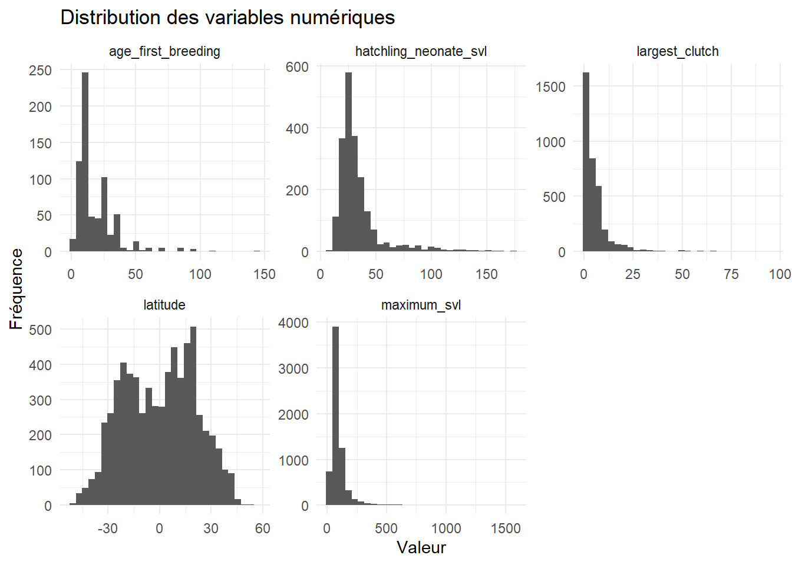
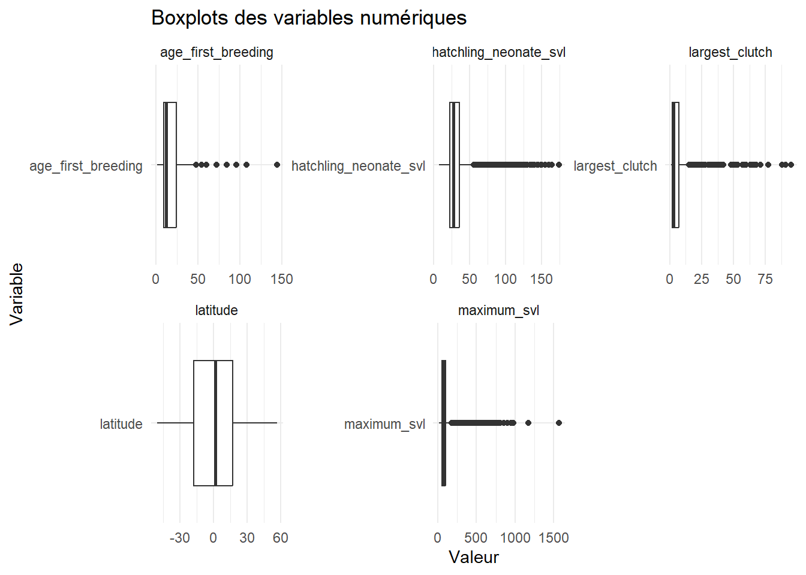
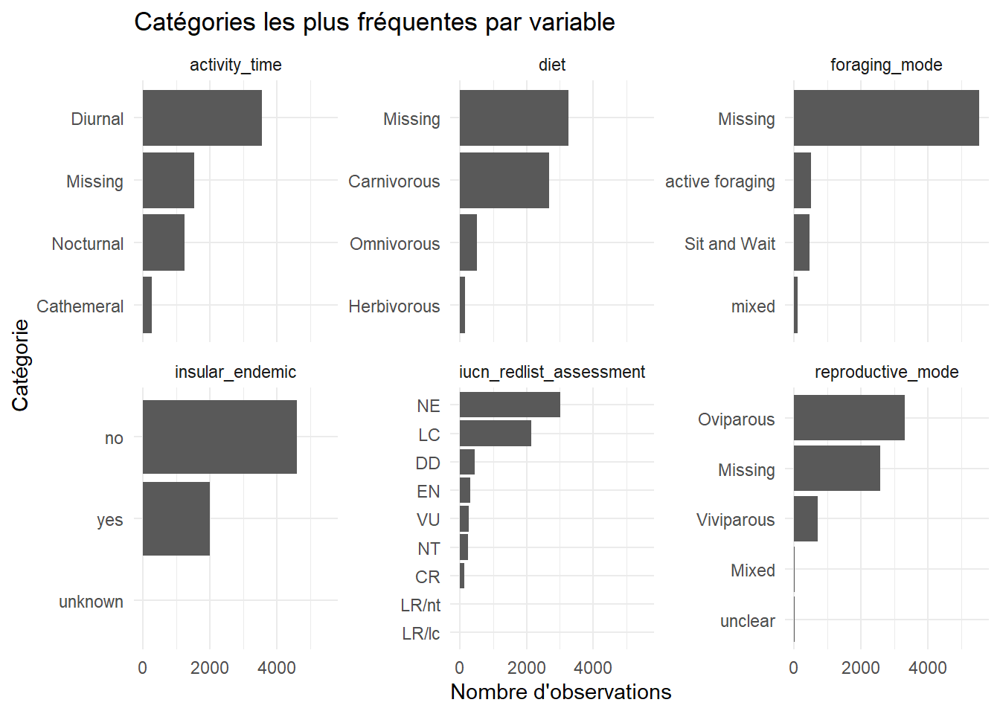
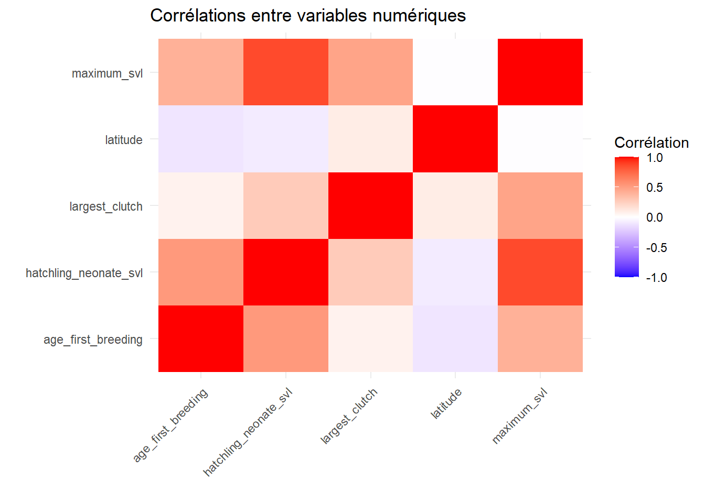
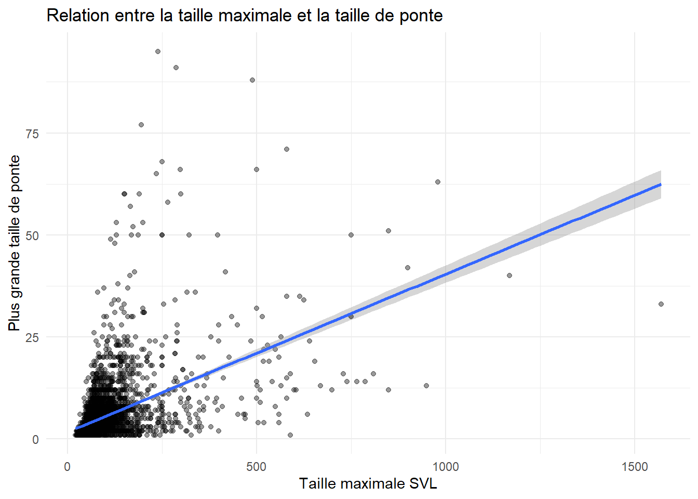
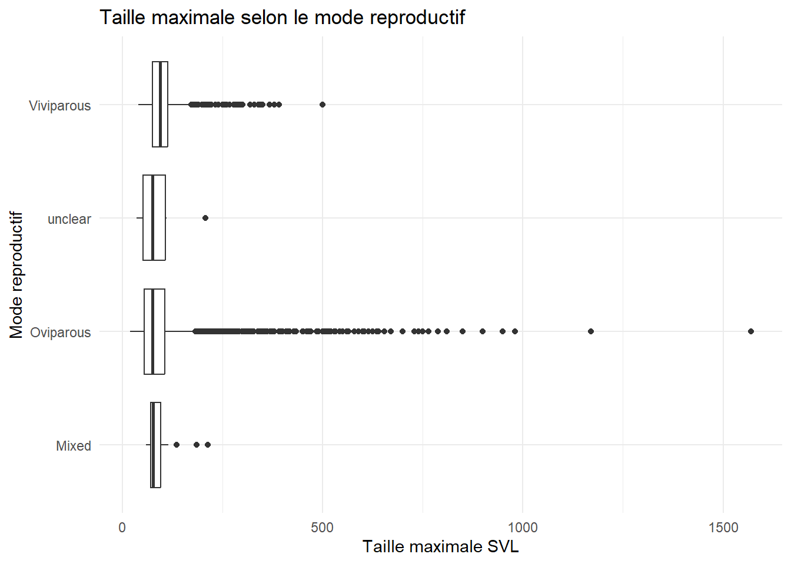
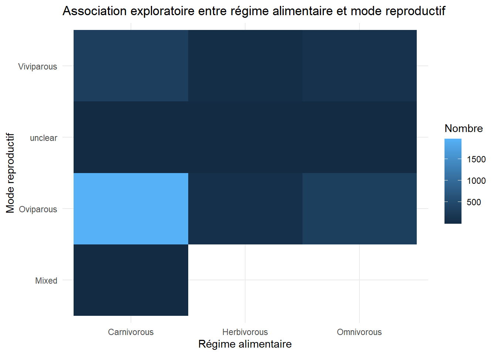
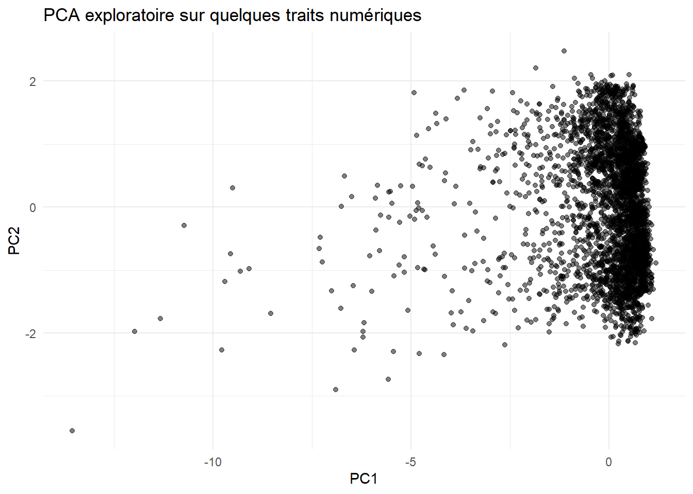
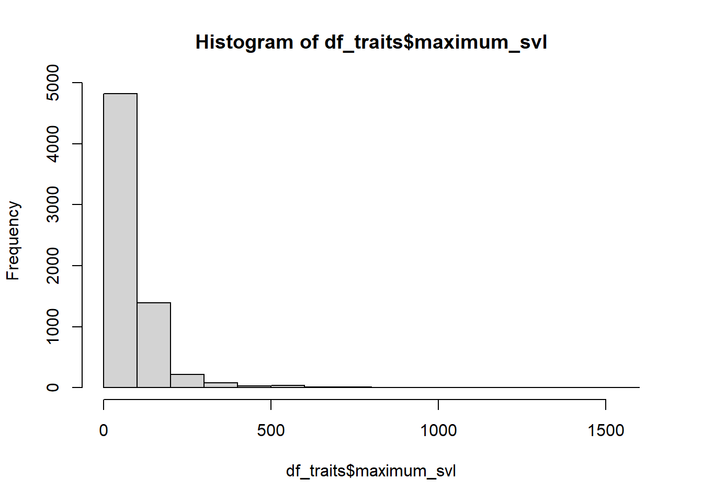

Code
library(tidyverse)
library(here)What Statistical Model Should I Use?
Le but de ce module est d’apprendre à connaître les données avant de choisir un modèle statistique.
L’idée centrale est :
On ne commence pas une analyse en choisissant directement un modèle.
On commence par comprendre la question, la structure du tableau, les types de variables, les valeurs manquantes, les distributions, les outliers et les relations entre variables.
Dans ce module, nous travaillons avec le fichier df_traits.csv, un jeu de données de traits biologiques de reptiles/lézards. Chaque ligne représente une espèce, et chaque colonne représente une information taxonomique, morphologique, écologique, reproductive ou de conservation.
À la fin du module, je dois être capable de :
Un modèle statistique ne peut pas corriger des données mal comprises.
Avant de demander :
Quel modèle statistique dois-je utiliser ?
je dois d’abord répondre à ces questions :
| Question | Pourquoi c’est important |
|---|---|
| Quelle est l’unité d’observation ? | Pour savoir ce que représente une ligne |
| Quelle est la variable réponse ? | Elle guide le choix du modèle |
| La réponse est-elle continue, binaire, un comptage ou une catégorie ? | Chaque type de variable demande une famille de modèles différente |
| Les données sont-elles complètes ? | Les valeurs manquantes peuvent biaiser les résultats |
| Les variables sont-elles au bon format ? | R ne traite pas de la même façon un nombre, un texte et un facteur |
| Y a-t-il des outliers ? | Les valeurs extrêmes peuvent influencer certains modèles |
| Les variables sont-elles liées entre elles ? | Cela aide à construire une hypothèse et à préparer la modélisation |
Un tableau est considéré comme tidy lorsque :
| Principe | Exemple |
|---|---|
| Une ligne = une observation | une espèce |
| Une colonne = une variable | taille, régime alimentaire, statut IUCN |
| Une cellule = une valeur | 61 mm, carnivore, LC |
Dans notre cas, si chaque ligne correspond à une espèce et chaque colonne à un trait, le tableau est déjà proche d’un format tidy.
Le data cleaning consiste à préparer les données pour l’analyse.
Cela inclut :
L’EDA, ou exploratory data analysis, sert à comprendre les données avant la modélisation.
Elle permet de voir :
library(tidyverse)
library(here)tidyverse regroupe plusieurs packages utiles : dplyr, ggplot2, tidyr, readr, forcats, etc.here permet de construire des chemins de fichiers à partir de la racine du projet Quarto.here()[1] "C:/Users/Drarv/Downloads/stat_model_training"La fonction here() doit retourner le dossier principal du projet, par exemple :
C:/Users/Drarv/Downloads/stat_model_trainingSi ce chemin est correct, les chemins vers les fichiers seront plus faciles à gérer.
Le fichier doit être placé dans l’un de ces dossiers :
datasets/df_traits.csvData/df_traits.csvLe code suivant cherche automatiquement le fichier dans ces emplacements.
here("Data", "df_traits.csv")[1] "C:/Users/Drarv/Downloads/stat_model_training/Data/df_traits.csv"df_traits <- read.csv(here("Data", "df_traits.csv"),
stringsAsFactors = FALSE,
na.strings = c("", "NA", "N/A", "na", "NaN")) %>%
as_tibble() %>%
select(-any_of(c("index", "X")))
df_traitsread.csv(...)Importe le fichier CSV dans R.
stringsAsFactors = FALSEEmpêche R de transformer automatiquement les textes en facteurs. On veut contrôler nous-mêmes cette étape.
na.strings = c("", "NA", "N/A", "na", "NaN")Indique à R quelles valeurs doivent être considérées comme manquantes.
select(-any_of(c("index", "X")))Retire une colonne d’index automatique si elle existe.
class(df_traits)[1] "tbl_df" "tbl" "data.frame"dim(df_traits)[1] 6612 14names(df_traits) [1] "family" "genus"
[3] "species" "latitude"
[5] "insular_endemic" "maximum_svl"
[7] "hatchling_neonate_svl" "activity_time"
[9] "diet" "foraging_mode"
[11] "reproductive_mode" "largest_clutch"
[13] "age_first_breeding" "iucn_redlist_assessment"head(df_traits)class(df_traits) indique le type d’objet R.dim(df_traits) donne le nombre de lignes et de colonnes.names(df_traits) affiche les noms de variables.head(df_traits) montre les premières lignes du tableau.Dans nos premières sorties, le tableau contenait 6612 observations et 14 variables.
glimpse(df_traits)Rows: 6,612
Columns: 14
$ family <chr> "Scincidae", "Scincidae", "Scincidae", "Scinci…
$ genus <chr> "Ablepharus", "Ablepharus", "Ablepharus", "Abl…
$ species <chr> "Ablepharus bivittatus", "Ablepharus budaki", …
$ latitude <dbl> 34.16, 36.44, 38.32, 38.96, 41.38, 27.09, 41.1…
$ insular_endemic <chr> "no", "no", "no", "no", "no", "no", "no", "no"…
$ maximum_svl <dbl> 61.0, 48.0, 54.0, 44.0, 58.8, 34.9, 58.0, 50.0…
$ hatchling_neonate_svl <dbl> 18.5, NA, NA, NA, 17.5, 14.5, 20.0, NA, 20.0, …
$ activity_time <chr> "Diurnal", "Diurnal", "Diurnal", "Diurnal", "D…
$ diet <chr> "Carnivorous", "Carnivorous", "Carnivorous", N…
$ foraging_mode <chr> NA, NA, NA, NA, NA, NA, NA, NA, NA, NA, NA, NA…
$ reproductive_mode <chr> "Oviparous", "Oviparous", "Oviparous", NA, "Ov…
$ largest_clutch <int> 5, 5, 4, NA, 8, 2, 6, 5, 6, 6, NA, 12, NA, 12,…
$ age_first_breeding <dbl> NA, NA, NA, NA, 10, NA, 6, NA, 10, NA, NA, NA,…
$ iucn_redlist_assessment <chr> "LC", "LC", "LC", "DD", "LC", "NE", "LC", "LC"…glimpse() ?glimpse() donne une vue compacte du tableau :
C’est une commande très utile au début de toute analyse.
Dans ce jeu de données, les variables family, genus et species sont des informations taxonomiques. Les autres colonnes sont des traits ou variables d’analyse.
tax_cols <- c("family", "genus", "species")
trait_cols <- setdiff(names(df_traits), tax_cols)
tax_cols[1] "family" "genus" "species"trait_cols [1] "latitude" "insular_endemic"
[3] "maximum_svl" "hatchling_neonate_svl"
[5] "activity_time" "diet"
[7] "foraging_mode" "reproductive_mode"
[9] "largest_clutch" "age_first_breeding"
[11] "iucn_redlist_assessment"Les colonnes taxonomiques servent surtout à identifier les espèces.
Les traits peuvent servir comme :
Une question importante : est-ce qu’une même espèce apparaît plusieurs fois ?
duplicated_species <- df_traits %>%
filter(duplicated(species) | duplicated(species, fromLast = TRUE)) %>%
arrange(species)
nrow(duplicated_species)[1] 0head(duplicated_species)Si nrow(duplicated_species) vaut 0, il n’y a pas de doublons d’espèces.
Si le résultat est supérieur à 0, il faut inspecter les lignes. Les doublons peuvent fausser les analyses, surtout si l’unité d’observation est l’espèce.
Les valeurs manquantes sont centrales dans cette formation, car elles influencent fortement le choix des analyses.
missing_summary <- df_traits %>%
summarise(across(everything(), ~ sum(is.na(.)))) %>%
pivot_longer(
cols = everything(),
names_to = "variable",
values_to = "n_missing"
) %>%
mutate(
pct_missing = 100 * n_missing / nrow(df_traits)
) %>%
arrange(desc(pct_missing))
missing_summarysummarise(across(everything(), ~ sum(is.na(.))))Calcule le nombre de valeurs manquantes pour chaque colonne.
pivot_longer(...)Transforme le tableau large en tableau long. C’est plus pratique pour visualiser.
mutate(pct_missing = ...)Ajoute le pourcentage de valeurs manquantes.
arrange(desc(pct_missing))Classe les variables de la plus incomplète à la plus complète.
ggplot(missing_summary, aes(x = reorder(variable, pct_missing), y = pct_missing)) +
geom_col() +
coord_flip() +
labs(
title = "Pourcentage de valeurs manquantes par variable",
x = "Variable",
y = "% de valeurs manquantes"
) +
theme_minimal()
Les variables avec beaucoup de valeurs manquantes doivent être traitées avec prudence.
Par exemple :
missing_summary <- missing_summary %>%
mutate(
missing_category = case_when(
pct_missing == 0 ~ "Aucune valeur manquante",
pct_missing > 0 & pct_missing <= 5 ~ "Faible missingness",
pct_missing > 5 & pct_missing <= 40 ~ "Missingness modérée",
pct_missing > 40 & pct_missing <= 60 ~ "Missingness élevée",
pct_missing > 60 ~ "Missingness très élevée"
)
)
missing_summaryUne variable très incomplète n’est pas forcément inutile. Elle peut être biologiquement importante, mais elle nécessitera une réflexion :
Cette réflexion sera approfondie au Module 2.
numeric_vars <- names(df_traits)[sapply(df_traits, is.numeric)]
categorical_vars <- names(df_traits)[sapply(df_traits, function(x) is.character(x) | is.factor(x))]
numeric_vars[1] "latitude" "maximum_svl" "hatchling_neonate_svl"
[4] "largest_clutch" "age_first_breeding" categorical_vars[1] "family" "genus"
[3] "species" "insular_endemic"
[5] "activity_time" "diet"
[7] "foraging_mode" "reproductive_mode"
[9] "iucn_redlist_assessment"Les variables numériques peuvent représenter :
Les variables catégorielles peuvent représenter :
Dans R, il est souvent préférable que les variables catégorielles soient de type factor.
df_traits_typed <- df_traits %>%
mutate(across(all_of(categorical_vars), as.factor))
glimpse(df_traits_typed)Rows: 6,612
Columns: 14
$ family <fct> Scincidae, Scincidae, Scincidae, Scincidae, Sc…
$ genus <fct> Ablepharus, Ablepharus, Ablepharus, Ablepharus…
$ species <fct> Ablepharus bivittatus, Ablepharus budaki, Able…
$ latitude <dbl> 34.16, 36.44, 38.32, 38.96, 41.38, 27.09, 41.1…
$ insular_endemic <fct> no, no, no, no, no, no, no, no, no, no, no, no…
$ maximum_svl <dbl> 61.0, 48.0, 54.0, 44.0, 58.8, 34.9, 58.0, 50.0…
$ hatchling_neonate_svl <dbl> 18.5, NA, NA, NA, 17.5, 14.5, 20.0, NA, 20.0, …
$ activity_time <fct> Diurnal, Diurnal, Diurnal, Diurnal, Diurnal, D…
$ diet <fct> Carnivorous, Carnivorous, Carnivorous, NA, Car…
$ foraging_mode <fct> NA, NA, NA, NA, NA, NA, NA, NA, NA, NA, NA, NA…
$ reproductive_mode <fct> Oviparous, Oviparous, Oviparous, NA, Oviparous…
$ largest_clutch <int> 5, 5, 4, NA, 8, 2, 6, 5, 6, 6, NA, 12, NA, 12,…
$ age_first_breeding <dbl> NA, NA, NA, NA, 10, NA, 6, NA, 10, NA, NA, NA,…
$ iucn_redlist_assessment <fct> LC, LC, LC, DD, LC, NE, LC, LC, NE, LC, VU, EN…Un texte comme "Carnivorous" est seulement une chaîne de caractères.
Un facteur indique à R :
Cette variable représente des catégories.
C’est important pour les modèles statistiques, car R créera automatiquement des comparaisons entre catégories.
continuous_summary <- df_traits %>%
select(all_of(numeric_vars)) %>%
pivot_longer(
cols = everything(),
names_to = "variable",
values_to = "value"
) %>%
group_by(variable) %>%
summarise(
n = sum(!is.na(value)),
n_missing = sum(is.na(value)),
mean = mean(value, na.rm = TRUE),
sd = sd(value, na.rm = TRUE),
median = median(value, na.rm = TRUE),
q1 = quantile(value, 0.25, na.rm = TRUE),
q3 = quantile(value, 0.75, na.rm = TRUE),
min = min(value, na.rm = TRUE),
max = max(value, na.rm = TRUE),
.groups = "drop"
)
continuous_summaryCe résumé permet de repérer :
df_traits %>%
select(all_of(numeric_vars)) %>%
pivot_longer(
cols = everything(),
names_to = "variable",
values_to = "value"
) %>%
filter(!is.na(value)) %>%
ggplot(aes(x = value)) +
geom_histogram(bins = 30) +
facet_wrap(~ variable, scales = "free") +
labs(
title = "Distribution des variables numériques",
x = "Valeur",
y = "Fréquence"
) +
theme_minimal()
df_traits %>%
select(all_of(numeric_vars)) %>%
pivot_longer(
cols = everything(),
names_to = "variable",
values_to = "value"
) %>%
filter(!is.na(value)) %>%
ggplot(aes(x = variable, y = value)) +
geom_boxplot() +
coord_flip() +
facet_wrap(~ variable, scales = "free") +
labs(
title = "Boxplots des variables numériques",
x = "Variable",
y = "Valeur"
) +
theme_minimal()
Les boxplots servent à repérer :
La règle IQR définit comme outliers les valeurs situées en dessous de :
[ Q1 - 1.5 IQR ]
ou au-dessus de :
[ Q3 + 1.5 IQR ]
où :
[ IQR = Q3 - Q1 ]
detect_outliers_iqr <- function(x) {
q1 <- quantile(x, 0.25, na.rm = TRUE)
q3 <- quantile(x, 0.75, na.rm = TRUE)
iqr <- q3 - q1
lower_bound <- q1 - 1.5 * iqr
upper_bound <- q3 + 1.5 * iqr
sum(x < lower_bound | x > upper_bound, na.rm = TRUE)
}
outlier_summary <- tibble(
variable = numeric_vars,
n_outliers = map_int(numeric_vars, ~ detect_outliers_iqr(df_traits[[.x]]))
) %>%
left_join(
missing_summary %>% select(variable, pct_missing),
by = "variable"
)
outlier_summaryUn outlier n’est pas automatiquement une erreur.
En biologie, une valeur extrême peut être :
On ne supprime jamais un outlier sans justification.
Nous allons maintenant regarder les catégories les plus fréquentes.
cat_trait_vars <- setdiff(categorical_vars, tax_cols)
categorical_summary <- df_traits %>%
select(all_of(cat_trait_vars)) %>%
pivot_longer(
cols = everything(),
names_to = "variable",
values_to = "category"
) %>%
mutate(category = if_else(is.na(category), "Missing", as.character(category))) %>%
count(variable, category, sort = TRUE) %>%
group_by(variable) %>%
mutate(
pct = 100 * n / sum(n),
rank = row_number()
) %>%
ungroup()
categorical_summarycategorical_summary %>%
filter(rank <= 10) %>%
ggplot(aes(x = reorder(category, n), y = n)) +
geom_col() +
coord_flip() +
facet_wrap(~ variable, scales = "free_y") +
labs(
title = "Catégories les plus fréquentes par variable",
x = "Catégorie",
y = "Nombre d'observations"
) +
theme_minimal()
Ce graphique permet de voir :
Une variable catégorielle très déséquilibrée peut poser problème dans un modèle.
cor_matrix <- df_traits %>%
select(all_of(numeric_vars)) %>%
cor(use = "pairwise.complete.obs")
cor_matrix latitude maximum_svl hatchling_neonate_svl
latitude 1.000000000 -0.008342921 -0.08613691
maximum_svl -0.008342921 1.000000000 0.85991210
hatchling_neonate_svl -0.086136910 0.859912101 1.00000000
largest_clutch 0.094788426 0.472278560 0.27042185
age_first_breeding -0.111217181 0.406792723 0.52252633
largest_clutch age_first_breeding
latitude 0.09478843 -0.11121718
maximum_svl 0.47227856 0.40679272
hatchling_neonate_svl 0.27042185 0.52252633
largest_clutch 1.00000000 0.06566284
age_first_breeding 0.06566284 1.00000000cor_matrix %>%
as.data.frame() %>%
rownames_to_column("var1") %>%
pivot_longer(
cols = -var1,
names_to = "var2",
values_to = "correlation"
) %>%
ggplot(aes(x = var1, y = var2, fill = correlation)) +
geom_tile() +
scale_fill_gradient2(
low = "blue",
mid = "white",
high = "red",
midpoint = 0,
limits = c(-1, 1)
) +
labs(
title = "Corrélations entre variables numériques",
x = "",
y = "",
fill = "Corrélation"
) +
theme_minimal() +
theme(axis.text.x = element_text(angle = 45, hjust = 1))
Une corrélation proche de 1 indique une association positive forte.
Une corrélation proche de -1 indique une association négative forte.
Une corrélation proche de 0 indique peu d’association linéaire.
Attention : une corrélation ne prouve pas une causalité.
df_traits %>%
filter(!is.na(maximum_svl), !is.na(largest_clutch)) %>%
ggplot(aes(x = maximum_svl, y = largest_clutch)) +
geom_point(alpha = 0.4) +
geom_smooth(method = "lm", se = TRUE) +
labs(
title = "Relation entre la taille maximale et la taille de ponte",
x = "Taille maximale SVL",
y = "Plus grande taille de ponte"
) +
theme_minimal()
Ce graphique permet d’explorer si les espèces plus grandes ont tendance à avoir des pontes plus grandes.
À ce stade, on ne conclut pas encore statistiquement. On observe seulement une tendance possible.
Exemple : taille maximale selon le mode reproductif.
df_traits %>%
filter(!is.na(maximum_svl), !is.na(reproductive_mode)) %>%
ggplot(aes(x = reproductive_mode, y = maximum_svl)) +
geom_boxplot() +
coord_flip() +
labs(
title = "Taille maximale selon le mode reproductif",
x = "Mode reproductif",
y = "Taille maximale SVL"
) +
theme_minimal()
Ce graphique permet de comparer la distribution d’une variable continue entre plusieurs groupes.
Si la variable réponse est maximum_svl et le prédicteur est reproductive_mode, un modèle possible plus tard serait une régression linéaire, à condition de vérifier les hypothèses.
Exemple : régime alimentaire et mode reproductif.
df_traits %>%
filter(!is.na(diet), !is.na(reproductive_mode)) %>%
count(diet, reproductive_mode) %>%
ggplot(aes(x = diet, y = reproductive_mode, fill = n)) +
geom_tile() +
labs(
title = "Association exploratoire entre régime alimentaire et mode reproductif",
x = "Régime alimentaire",
y = "Mode reproductif",
fill = "Nombre"
) +
theme_minimal()
Ce graphique montre quelles combinaisons de catégories sont fréquentes.
Pour tester statistiquement l’association entre deux variables catégorielles, on pourrait envisager un test du chi-carré ou un modèle logistique/multinomial selon la question.
La PCA est utile lorsque plusieurs variables numériques sont disponibles et que l’on veut résumer leur variation.
Ici, nous allons utiliser seulement les variables numériques avec suffisamment d’observations complètes.
pca_vars <- intersect(
c("latitude", "maximum_svl", "largest_clutch"),
names(df_traits)
)
pca_data <- df_traits %>%
select(species, all_of(pca_vars)) %>%
drop_na()
nrow(pca_data)[1] 3582pca_vars[1] "latitude" "maximum_svl" "largest_clutch"if (length(pca_vars) >= 2 && nrow(pca_data) > 20) {
pca_res <- prcomp(
pca_data %>% select(all_of(pca_vars)),
center = TRUE,
scale. = TRUE
)
print(summary(pca_res))
pca_scores <- as.data.frame(pca_res$x) %>%
bind_cols(pca_data %>% select(species))
ggplot(pca_scores, aes(x = PC1, y = PC2)) +
geom_point(alpha = 0.5) +
labs(
title = "PCA exploratoire sur quelques traits numériques",
x = "PC1",
y = "PC2"
) +
theme_minimal()
} else {
message("Pas assez de variables ou d'observations complètes pour faire une PCA.")
}Importance of components:
PC1 PC2 PC3
Standard deviation 1.2176 0.9991 0.7205
Proportion of Variance 0.4942 0.3327 0.1731
Cumulative Proportion 0.4942 0.8269 1.0000
La PCA ne répond pas directement à une question de recherche causale ou prédictive.
Elle sert surtout à :
Après l’exploration, on peut formuler des questions comme :
| Question | Variable réponse | Type de réponse | Modèle possible plus tard |
|---|---|---|---|
| La taille maximale varie-t-elle selon le mode reproductif ? | maximum_svl |
Continue | Régression linéaire |
| Les espèces insulaires sont-elles plus souvent menacées ? | iucn_redlist_assessment simplifiée |
Catégorielle/binaire | Régression logistique |
| La taille de ponte augmente-t-elle avec la taille corporelle ? | largest_clutch |
Comptage/numérique | Poisson, binomial négatif ou linéaire selon distribution |
| Le régime alimentaire est-il associé au mode reproductif ? | reproductive_mode |
Catégorielle | Chi-carré, logistique, multinomial |
| Les espèces se regroupent-elles selon leurs traits ? | Plusieurs traits | Multivarié | PCA, clustering |
Avant de modéliser, je dois vérifier :
| Point à vérifier | Question |
|---|---|
| Variable réponse | Est-elle bien définie ? |
| Type de réponse | Continue, binaire, comptage, catégorie ? |
| Missingness | La variable réponse ou les prédicteurs ont-ils trop de NA ? |
| Format | Les variables catégorielles sont-elles des facteurs ? |
| Outliers | Y a-t-il des valeurs extrêmes à inspecter ? |
| Indépendance | Une ligne correspond-elle bien à une observation indépendante ? |
| Taille d’échantillon | Ai-je assez d’observations complètes ? |
| Objectif | Est-ce une question d’association, de prédiction ou de causalité ? |
Nous sauvegardons une version typée du jeu de données pour les modules suivants.
dir.create(here("datasets"), showWarnings = FALSE)
write.csv(
df_traits_typed,
here("datasets", "df_traits_module1_clean.csv"),
row.names = FALSE
)Le fichier df_traits_module1_clean.csv sera utile comme version de travail.
Il contient les variables catégorielles converties en facteurs dans R pendant la session, mais dans un CSV, les facteurs seront sauvegardés comme texte. Ce n’est pas un problème : on pourra les reconvertir au moment de les importer.
| Erreur | Cause probable | Correction |
|---|---|---|
object not found |
L’objet n’a pas été créé ou le chunk n’a pas été exécuté | Exécuter les chunks dans l’ordre |
file not found |
Le fichier CSV n’est pas dans le bon dossier | Mettre le fichier dans datasets/ ou Data/ |
| Une variable numérique apparaît comme texte | Présence de caractères ou mauvais import | Nettoyer puis convertir avec as.numeric() |
| Graphique vide | Trop de valeurs manquantes | Vérifier avec summary() et is.na() |
| Trop de catégories dans un graphique | Variable comme species ou genus |
Exclure les identifiants taxonomiques |
| Render Quarto échoue | YAML mal écrit ou package manquant | Vérifier l’en-tête YAML et installer le package |
| Fonction | Rôle |
|---|---|
read.csv() |
Importer un fichier CSV |
here() |
Construire un chemin depuis la racine du projet |
class() |
Voir le type d’objet |
dim() |
Voir le nombre de lignes et colonnes |
names() |
Voir les noms des variables |
head() |
Voir les premières lignes |
glimpse() |
Voir la structure compacte du tableau |
is.na() |
Détecter les valeurs manquantes |
summarise() |
Résumer les données |
across() |
Appliquer une fonction à plusieurs colonnes |
pivot_longer() |
Passer du format large au format long |
ggplot() |
Construire un graphique |
geom_histogram() |
Visualiser une distribution |
geom_boxplot() |
Visualiser la dispersion et les outliers |
cor() |
Calculer des corrélations |
prcomp() |
Faire une PCA |
write.csv() |
Exporter un fichier CSV |
Combien y a-t-il d’observations et de variables dans df_traits ?
dim(df_traits)[1] 6612 14Quelles sont les variables numériques ?
numeric_vars[1] "latitude" "maximum_svl" "hatchling_neonate_svl"
[4] "largest_clutch" "age_first_breeding" Quelles variables ont plus de 40 % de valeurs manquantes ?
missing_summary %>%
filter(pct_missing > 40)Quelle variable serait la plus problématique à utiliser directement dans un modèle ?
missing_summary %>%
slice_max(pct_missing, n = 1)Est-ce que maximum_svl pourrait être une variable réponse continue ?
summary(df_traits$maximum_svl) Min. 1st Qu. Median Mean 3rd Qu. Max. NA's
17.00 55.70 75.30 95.35 104.00 1570.00 24 hist(df_traits$maximum_svl)
Le nombre d’observations correspond au nombre de lignes.
Le nombre de variables correspond au nombre de colonnes.
nrow(df_traits)[1] 6612ncol(df_traits)[1] 14Les variables numériques sont identifiées avec is.numeric.
names(df_traits)[sapply(df_traits, is.numeric)][1] "latitude" "maximum_svl" "hatchling_neonate_svl"
[4] "largest_clutch" "age_first_breeding" Les variables avec plus de 40 % de valeurs manquantes doivent être traitées avec prudence.
missing_summary %>%
filter(pct_missing > 40) %>%
arrange(desc(pct_missing))La variable la plus problématique est celle qui a le plus fort pourcentage de valeurs manquantes.
missing_summary %>%
arrange(desc(pct_missing)) %>%
head(1)maximum_svl est une variable numérique. Elle peut donc être une variable réponse continue dans une régression linéaire, à condition de vérifier :
Dans ce module, nous avons appris à :
Le point le plus important à retenir est :
Le choix d’un modèle statistique commence toujours par la compréhension de la variable réponse, des prédicteurs, des valeurs manquantes et de la structure des données.
Le prochain module portera sur la gestion des valeurs manquantes.
18.1 Comment interpréter un histogramme ?
Un histogramme permet de voir :